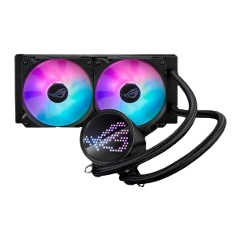

Water Cooler Asus Rog Ryuo III 240, ARGB, 240mm, Preto, 90RC00J1-M0UAY0
R$ 1099,99
Especificações
Compatibilidade de Soquete: Intel LGA 1700/1200/115x | AMD AM5/AM4
Waterblock: 89 x 89 x 68.3 mm | Base em cobre
Bomba: Asetek 8ª geração | 800–2600 ±300 RPM
Radiador: 279.5 x 120 x 30 mm | Alumínio
Tubo: Borracha revestida | 400 mm
Ventoinhas: 2x ROG 120mm ARGB (120 x 120 x 25 mm)
Velocidade da ventoinha: 2200 ±300 RPM
Pressão estática: 3.88 mmH2O
Fluxo de ar: 70.07 CFM
Ruído: 36.45 dB(A)
Controle: PWM/DC
Recursos: Display LED Anime Matrix | Suporte AURA Sync
Conteúdo da Embalagem: Cooler com pasta térmica pré-aplicada, 2x ventoinhas 120mm, cabos (fan e ARGB), acessórios, guia rápido, adesivo ROG e organizador ROG